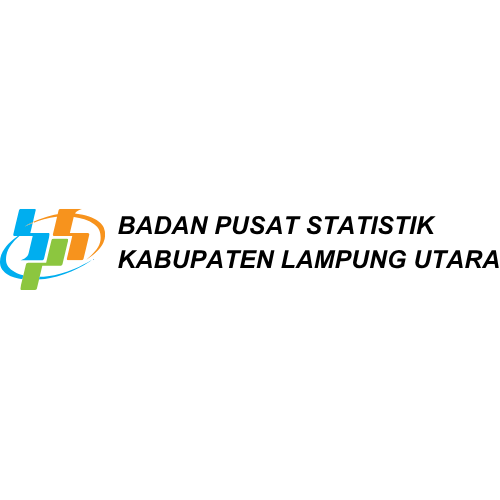

#NGIBAR
Ngisi Bareng Sensus Ekonomi 2026
Seluruh BUMDES Kabupaten Lampung Utara
7 Agustus 2026
Link Zoom Meeting
Bergabung ke ruang virtual
Daftar Hadir
Isi absensi peserta kegiatan
Link Pengisian SE2026
Akses form Sensus Ekonomi
Materi & Dokumentasi
Unduh panduan dan foto
© 2026 BPS Kabupaten Lampung Utara
Data Mencerdaskan Bangsa